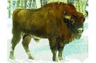

Барсук – зверь средних размеров, длина
тела составляет 65-85 см, хвоста – 12-18 см,
а масса около 8 кг, но осенью, перед залеганием
в спячку, этот зверь накапливает много жира и
подкожного сала, и его масса увеличивается почти
в два раза. |
 |
Белка-летяга по своему внешнему виду имеет сходство
с обычной белкой. Отличия заключаются лишь в том,
что у этого животного между передними и задними
конечностями имеется характерная кожная складка,
покрытая шерстью. Эта складка помогает белке-летяге
планировать в воздухе среди деревьев. |
 |
Бурый медведь - Облик типичен для представителя семейства
медвежьих. Тело у него мощное, с высокой холкой; голова
массивная с небольшими ушами и глазами. Хвост короткий
— 65—210 мм, едва выделяющийся из шерсти. Лапы сильные с
мощными, невтяжными когтями длиной 8—10 см, пятипалые,
стопоходящие. |
 |
Зубр Длина туловища взрослых шестилетних быков может
достигать 300 см, высота в холке — 188 см. Самки имеют
несколько меньшие размеры: длина туловища — 270 см, высота
в холке — 167 см. Передняя часть тела зубра очень хорошо
развита — она массивнее, шире и выше задней. Живот подобран
и не провисает. |
 |
Норка Европейская Мелкое животное с гибким вытянутым телом,
короткими конечностями, сравнительно коротким непушистым
хвостом. Длина тела 28—43 см, вес 550—800 г, длина хвоста
12—19 см. Мех короткий, густой, плотный, с очень густой
подпушью, которая не намокает даже при длительном пребывании
в воде. |
 |
Рысь – средних размеров зверь с относительно коротким,
высоко поднятым на ногах туловищем, круглой головой и коротким,
как бы «куцим» хвостом. Уши небольшие, стоячие, увенчанные длинными
кисточками, на щеках заметны «баки». |
 |
 |
 |
 |